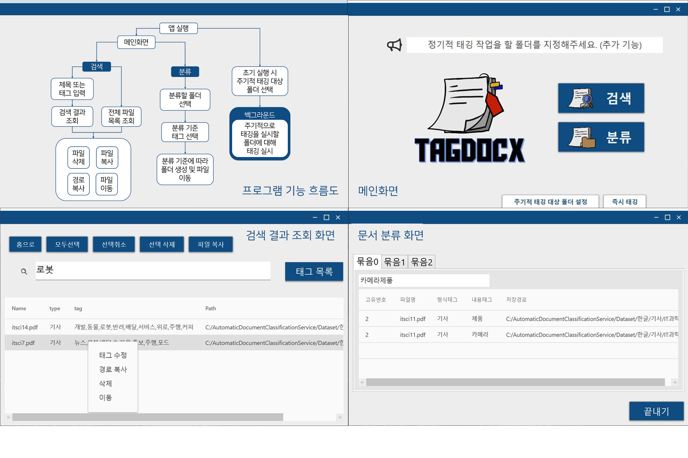

Healthee - Health Training Chatbot
-
Github.Demo Video.Structure Explaning Video - Healthee is a chatbot service designed as a health training service for people who wants to excercise at home.
- Healthee provides functions such as recommending exercise and providing information on exercise equipment and food.
- This project is developed based on Microsoft Azure Bot Service.
- This project won the Best Planning Award (2nd Place) in Chatbot Contest with Microsoft, Korean Information Science Society. Ye Eun Jo, Yoojin Jung.
PlanetEarth - World's Hottest News Web Platform
-
Demo Video.Github.Front End.Back End - PlanetEarth is a web service that crawls the World's hottest news from the internet and translates it to Korean.
- Frontend: Used ReactGlobe api from Three.js framework to show Earth as a 3D globe. Used Post.js framework to show top 10 keywords for each city.
- Backend: Used Express app to navigate webpages. Crawled data from
Google Trends Websiteusing Request module from Node.js and parsed the data using cheerio module, then used GoogleTranslate API to translate data into Korean. - This project was created with
Development Student Clubs Ewha, sponsored by Google Inc. Ye Eun Jo, Jion Chu, JuHye Park, Hakyung Lee, SuHyun Yeo.
TagDocx - Document Classification Software
-
Paper.>Github. - TagDocx is a desktop software program that provides search and classification function.
- TagDocx is developed by analyzing documents and using deep learning models such as SGD Classifier and LDA topic modeling algorithm.
- This program uses Python, Anaconda, Kkomoran Library, TensorFlow, Visual Studio and Microsoft .NET.
- This project is for "Graduation Capston Project" in Ewha Womans University. Ye Eun Jo, Yoojin Jung, Yujin Park, Sojeong Chang.

Stealth UAV through Coandă Effect.
-
Paper.Presentation. - "Stealth UAV through Coandă Effect" Project suggests a Stealth UAV that achieves acoustic stealth through Coandă Effect.
- This project include using quiet methods (materials, structures) and verifying Stealth UAV through experiments.
- UAV prototype is created by 3D Printing in various versions. The prototype is designed using Fusion 360, and it is printed with Lauzbot taz 6, and a 3D Printer.
- This project is for "IITP Purdue Summer Program" in Purdue University, Indianapolis, United States. Ye Eun Jo, Dongyoon Shin, Hyeji Kim, Jihyuk Gong, Uijeong Jeong, Eric Matson.

BBi-Bi TALK - Profanity Filtering Messanger
-
GitHub. - BBi-Bi Talk is an android messanger with profanity filtering & profanity usage statistics.
- This project uses Firebase Real Time Database and Android Studio Framework.
- Profanity function is developed using Profanity Filtering Open API
Profanityand Statistics function is developed using View Statistics Open APIGraph View APIto show the statistics of profanity. - This project is for "Open Software Platform" in Ewha Womans University. Ye Eun Jo, NaHyun Kwno, Hyo Jin Moon, Hye Jin Lee.
 .
.